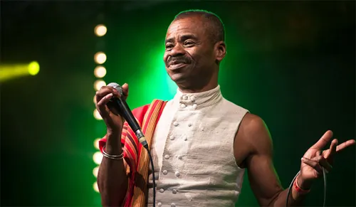

Jaojoby
Salegy
High-energy Salegy icon and pioneer.
Explore artists across Madagascar’s musical styles — from Salegy to Jazz, Tsapiky to Ba Gasy.
High-energy Salegy icon and pioneer.
Modern Salegy sound with strong stage presence.

Salegy artist known for lively rhythms and vibrant stage performances.
Malagasy jazz talent with refined musicality.
Smooth jazz voice and elegant interpretations.
Jazz performer blending Malagasy identity and groove.
Jazz musician blending Malagasy musical roots with refined jazz expression.
Jazz singer known for her warm voice and elegant interpretations, blending Malagasy sensitivity with classic jazz influences.
Popular Malagasy pop singer with timeless hits.

Pop melodies and modern Malagasy sound.
Contemporary pop sound mixing urban influences and smooth vocals.
Pop artist delivering catchy melodies with emotional and modern sound.
Band-driven pop with energetic performances.
Pop singer with a smooth and expressive style, combining contemporary pop vibes with emotional storytelling.
Pop artist delivering catchy melodies and heartfelt lyrics, connecting modern sounds with everyday Malagasy life.
One of Madagascar’s most iconic rock bands.
Rock group with strong Malagasy fanbase.
Famous Malagasy rock band with classic songs.
Tsapiky rhythm and dance-driven performances.
Fast guitar lines and energetic Tsapiky style.

Popular Tsapiky artist from the south.
Rap artist bringing Malagasy stories and flow.
Conscious Malagasy rap group known for strong lyrics and social messages
Urban rap sound with strong lyrical identity.
Modern Malagasy rap energy.
Rap artist with raw style and street vibe.
Modern rap voice with introspective themes and authentic urban sound.

Rap artist combining street realism with sharp lyrical storytelling.

Classic Malagasy sounds and folk inspiration.
Legendary Malagasy band with meaningful lyrics.
Traditional Malagasy artist and cultural voice.

Master of Malagasy guitar and folk storytelling.
Folk singer-songwriter known for poetic lyrics and acoustic arrangements rooted in Malagasy tradition.

Iconic Malagasy folk artist whose music combines acoustic guitar, heartfelt vocals, and strong social commentary.
Legendary Malagasy folk band known for acoustic-driven songs, poetic lyrics, and strong social messages.
Afro Malagasy vibes with dance energy.
Afro-influenced sound with urban touch.
Afro-pop / afro-urban direction and style.
Afro roots sound and island energy.
Afro Malagasy artist with modern rhythms.
Afro-urban sound with energetic beats and a modern Malagasy touch.
Pop-Afro artist blending modern melodies with Afro-inspired rhythms and urban style.
Pop-Afro singer known for emotional vocals and smooth Afro-influenced sounds.
Afro-inspired artist bringing smooth rhythms and contemporary island vibes.
Ba Gasy spirit with traditional Malagasy feel.
Classic Malagasy heritage songs and culture.
Gospel group bringing powerful voices.
Malagasy gospel performances and uplifting songs.
Harmony and worship-focused gospel group.
Gospel group delivering powerful worship songs with strong harmonies and spiritual depth.
Gospel music collective blending modern worship with traditional Malagasy influences.
Worship songs with modern Malagasy style.
Worship group known for deep spiritual songs and powerful moments of praise.
Worship group focused on praise and devotion through harmonious and uplifting songs
Worship artist delivering heartfelt praise songs with strong faith and devotion.
Worship artist known for gentle melodies and heartfelt praise songs, inspiring moments of prayer, faith, and spiritual reflection.
Worship singer known for gentle vocals and inspiring spiritual melodies.
Worship artist with spiritual focus and melodies.